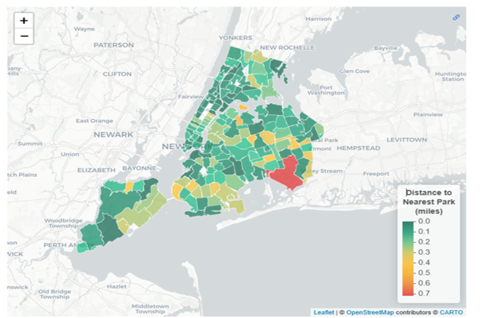
Unequal Ground: Mapping Park Access Inequality Across New York City
Introduction
In New York City, where over 8 million people navigate one of the world’s densest urban environments, public parks provide essential cooling during heat waves, filter air pollution, enable physical activity, and serve as community gathering places. Yet the distribution of these publicly funded resources raises a critical equity question: How equitable is access to public park space across different neighborhoods in New York City?
Our analysis builds on three research foundations. Sister and colleagues documented persistent racial gaps in park access, we update this by examining 311 maintenance complaints as measures of service quality. NYC Parks identified 2,700 sites with physical access barriers, we link these to current socioeconomic data. Hoffman’s team showed historical redlining shapes urban heat exposure, we extend this by examining parkland coverage and its relationship to heat vulnerability and air quality.
We examine six interconnected dimensions: geographic proximity by demographics, per capita availability by income, population-adjusted service ratios, maintenance complaint patterns, ADA accessibility, and environmental health benefits. By combining NYC Parks Properties spatial data, U.S. Census demographics, 311 requests, ADA facilities directories, and environmental health indicators, we construct a comprehensive portrait of park equity across NYC.
Geographic Proximity: Distance Matters, Demographics Determine
How does the average walking distance to the nearest park vary across the city and neighborhood demographic composition?
Park accessibility in New York City shows clear spatial and demographic inequality. Spatial distribution reveals that central areas such as Midtown and Lower Manhattan have the shortest average walking distances to the nearest public park, while outer portions of the Bronx, eastern Queens, and parts of southern Brooklyn display substantially longer distances, with several areas exceeding one mile.
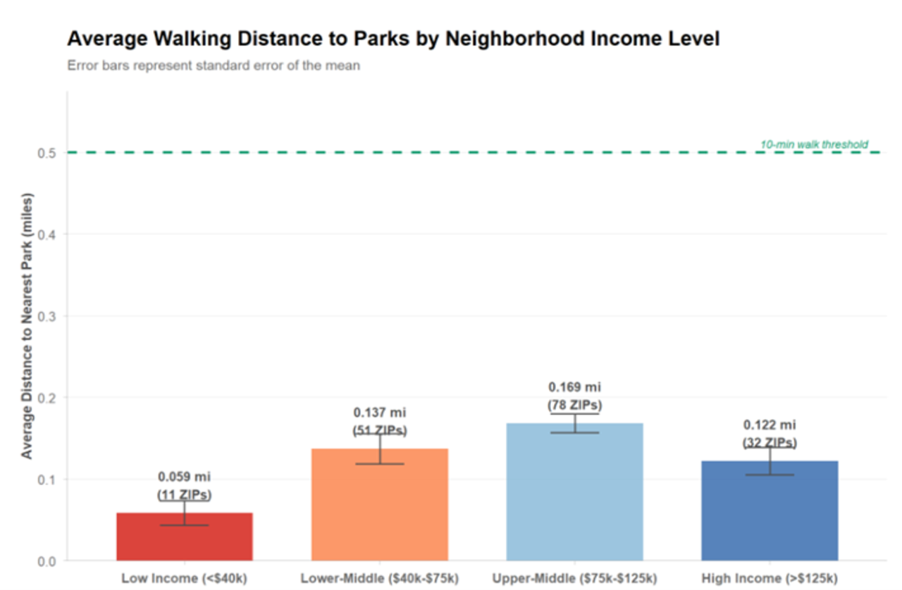
Income-based comparison further clarifies this pattern. Average walking distance increases across income categories, with upper-middle-income neighborhoods exhibiting the longest average distances, while both low and high-income areas show shorter distances on average. Although all income groups fall below the 10-minute walking threshold, the variation indicates park access is not evenly distributed.
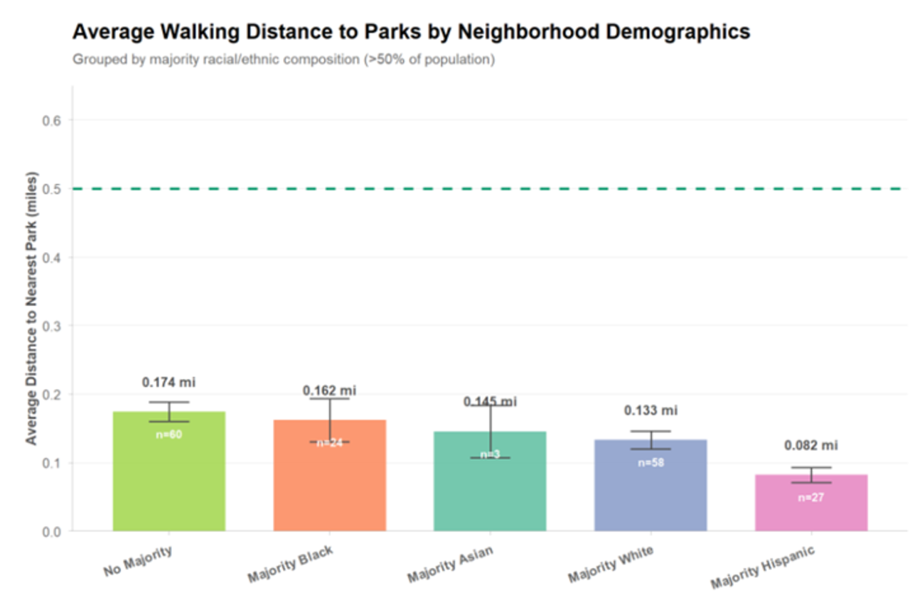
Disparities are also evident when neighborhoods are grouped by majority racial and ethnic composition. Areas without a clear racial majority and those with Black or Asian populations exhibit the longest average walking distances. White neighborhoods show shorter average distances, while Hispanic neighborhoods have the shortest distances overall. These differences indicate that park accessibility is shaped by neighborhood racial and ethnic composition in addition to geography and income.
Overall, access to public parks in New York City is unevenly distributed across space and demographic groups. Central neighborhoods benefit from closer proximity, while many peripheral and historically underserved communities face greater physical barriers.
The Income Paradox: More Parks, Less Wealth
Does Income Predict Access to Public Parks in New York City?
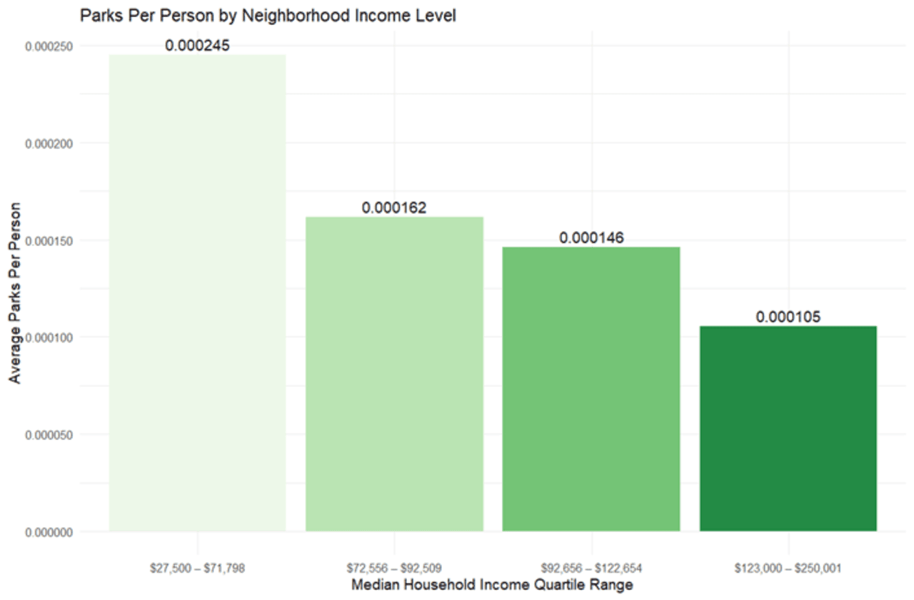
The lowest-income quartile had the greatest park availability, and access steadily declined as income increased. This suggests that residents of low-income neighborhoods have access to more parks relative to their population.
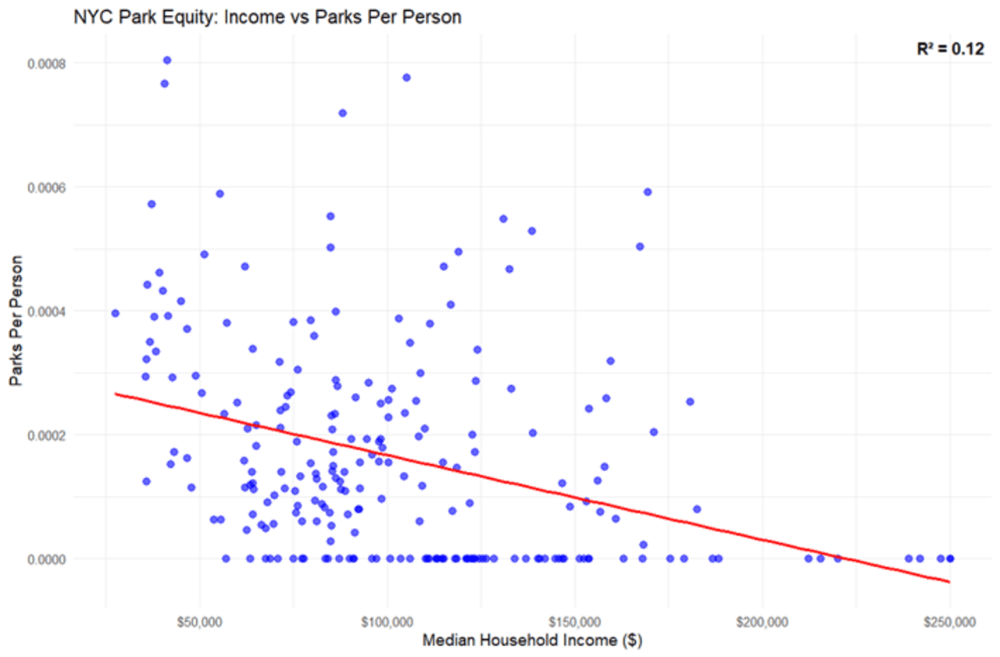
This scatterplot shows a weak relationship between median household income and parks per person. While the trendline slopes downward, the R² of 0.12 indicates income explains a small portion of park access differences. Most variation is driven by population density, land availability, zoning, and historical development patterns.
Low income neighborhoods have better park access than wealthier neighborhoods, challenging assumptions about park concentration in wealthy areas. This analysis measures only park quantity, not quality, safety, or maintenance. Income alone is not a reliable indicator of park equity, and future efforts should focus on both access and quality.
Population-Adjusted Service: The Geographic Divide
Are certain neighborhoods overserved/underserved in terms of recreational facilities relative to population density?
Numerous NYC neighborhoods are underserved in park availability relative to population. This was measured by calculating parks per 1,000 residents for each neighborhood to standardize relative facility accessibility given population sizes.
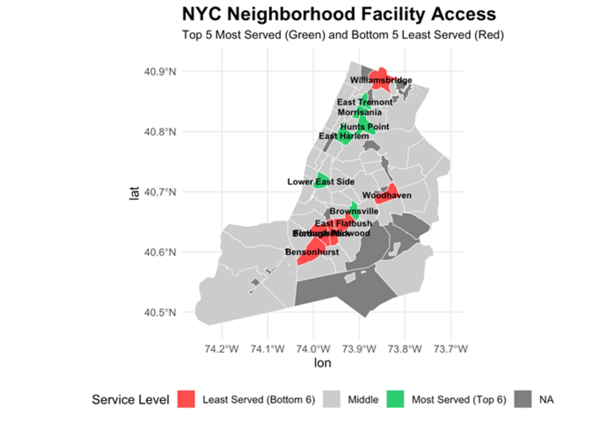
Results reveal a subtle yet noticeable correlation between parks per 1,000 residents and population, though this claim is inconsistent citywide as the scatterplot shows. However, trends were geographically consistent for the most part: Southwest Brooklyn had the top 4 worst served neighborhoods for park service clustered together with similar population and park numbers. Conversely, South Bronx had 3 of the top 5 best-served neighborhoods, with nearby East Harlem rounding out the top 20% best served neighborhoods.
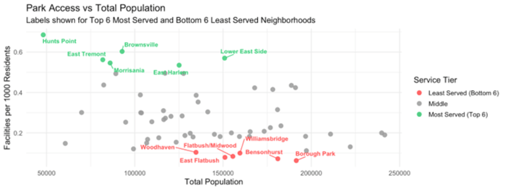
While neighborhood type (urban/suburban) might hold some relevance, especially in Brooklyn with highly varying results, it can mostly be seen as negligible. The Lower East Side in Manhattan has 86 parks for over 150,000 residents, whereas similarly populated East Flatbush has only 12. This question highlights historical investment in facility infrastructure across NYC neighborhoods and whether creating more greenspaces is possible without resident displacement.
Maintenance Complaints: Where Parks Need Attention
Are Park Maintenance Complaints More Common in Some NYC Boroughs Than Others?
We analyzed NYC 311 service requests related to park conditions so as to provide insight into where park maintenance concerns are most frequently reported by residents.
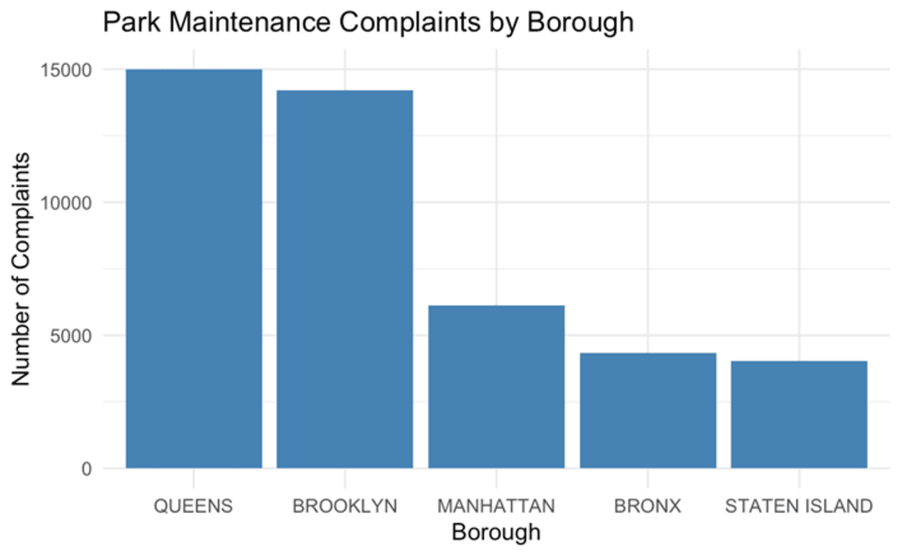
Queens and Brooklyn report the highest number of park maintenance complaints. Manhattan shows moderate levels, while the Bronx and Staten Island report substantially fewer. These relative differences remain stable across multiple years, suggesting patterns are not driven by isolated events.
The most common complaint categories relate to routine maintenance: cleanliness, litter removal, and tree care. This indicates complaints reflect everyday upkeep concerns rather than rare problems. Together, these findings indicate reported park maintenance demand is unevenly distributed across NYC boroughs.
311 data captures reported concerns rather than objective conditions. Differences in population size, park availability, 311 system awareness, or willingness to submit complaints may influence volume. Higher complaint counts don’t necessarily imply worse park quality, but do highlight where residents express greater maintenance needs and are important for allocating park maintenance resources.
ADA Accessibility: A Civil Rights Crisis
Can All New Yorkers Use Their Parks?
Examining 2,055 parks across 59 community boards reveals only 17.4%, which is fewer than one in five, contain ADA-accessible facilities.
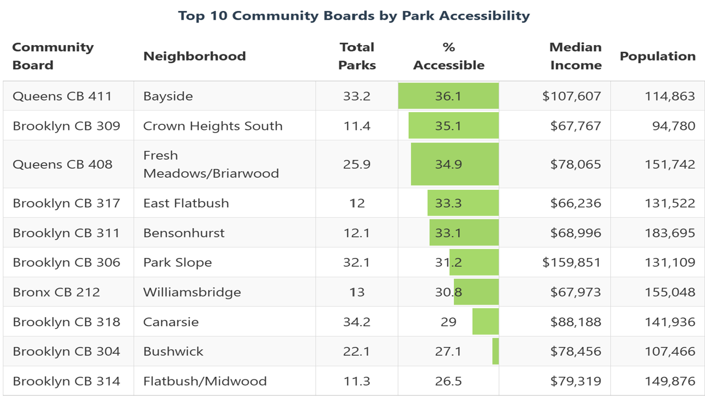
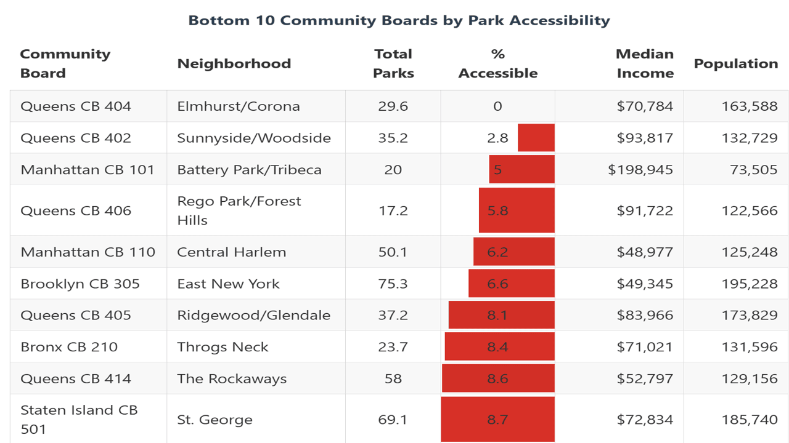
Variation is extreme: some Brooklyn neighborhoods exceed 35% accessibility, while Elmhurst/Corona has zero accessible facilities across 30 parks serving 163,588 residents.
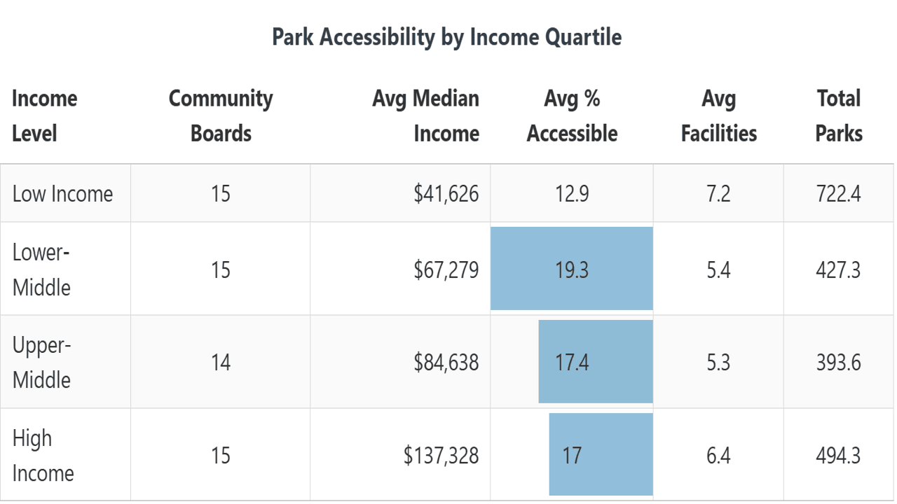
Surprisingly, wealth doesn’t predict accessibility: lower-middle income areas achieve 19.3%, while wealthy neighborhoods average only 17%. Battery Park, NYC’s wealthiest area, manages just 5%.
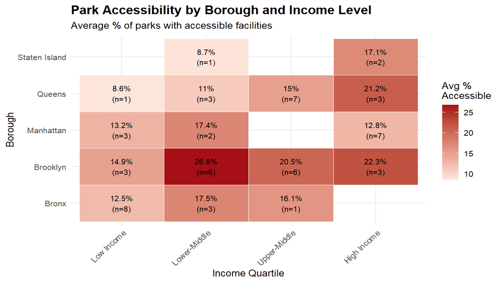
Brooklyn maintains consistent 15-27% accessibility, Manhattan struggles at 13-17% despite greater wealth, and Queens varies from 0-36%. These findings reveal accessibility deserts in low-income communities of color, compounding existing injustices.
This analysis measures facility presence, not quality, which is a critical limitation since nominal compliance may not equal practical access. Nonetheless, systematic exclusion demands immediate intervention through emergency audits and accelerated retrofitting.
Environmental Health Benefits: Heat and Air Quality
Do neighborhoods with more parkland per capita exhibit better air quality or lower heat vulnerability scores?
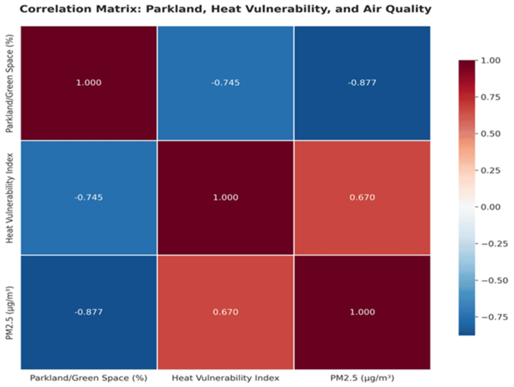
Heat Vulnerability Reduced 38%: Strong correlation (r = -0.745, p < 0.0001) shows high-parkland neighborhoods have heat vulnerability scores of 2.28 versus 3.67 in low-parkland areas—a 1.39-point reduction. Each 10% parkland increase lowers heat vulnerability by ~0.6 points.
Air Quality Improved 28%: Very strong correlation (r = -0.877, p < 0.0001) demonstrates high-parkland neighborhoods average 5.21 μg/m³ PM2.5 versus 7.20 μg/m³ in low-parkland areas—a 2.00 μg/m³ reduction. Each 10% parkland increase reduces PM2.5 by ~0.8 μg/m³.
Environmental Justice Crisis: Parkland ranges from 8% to 47% across neighborhoods. Lower-income areas ($72,196 median) have less parkland AND worse outcomes than higher-income areas ($115,455 median)—a $43,259 gap revealing environmental health burdens cluster with economic disadvantage.
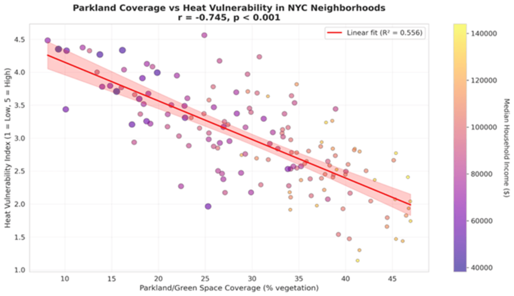
Urban greening is a data-supported public health intervention. With both correlations highly significant and explaining 56% (heat) and 77% (air quality) of variation, parkland demonstrates measurable benefits: reduced heat deaths, fewer respiratory illnesses, and better cardiovascular outcomes. Neighborhoods needing parkland most have the least access, demanding equity-focused action.
Integration: A System of Compounding Inequities
These six analyses reveal an integrated system of compounding disadvantages. Consider a low-income community of color in eastern Queens or outer Brooklyn: residents face longer walks to parks, share limited facilities with dense populations, encounter high maintenance complaints, find no accessible facilities, and lack sufficient parkland to mitigate heat and pollution.
Contrast this with affluent central Manhattan neighborhoods where residents walk blocks to parks, maintenance is better, accessibility standards are more consistently met, and parkland provides environmental protection. The cumulative effect creates vastly different lived experiences.
This systemic nature demands systemic solutions. Addressing only one dimension leaves fundamental inequities intact. The complexity of the income-access relationship, where lower-income areas show higher per capita access but worse proximity, maintenance, and environmental outcomes, demonstrates that simple narratives mischaracterize the problem. Having more parks per capita means little if they’re far away, overcrowded, poorly maintained, inaccessible, or insufficient for environmental health protection. True equity must consider all dimensions simultaneously.
Limitations and Data Considerations
Our analysis relies on publicly available datasets with inherent limitations. Census data are estimates with margins of error. Straight-line distance doesn’t capture actual walking routes. Parks per capita treats all parks equally. 311 complaints reflect reporting behavior, not objective conditions. ADA facility presence doesn’t guarantee quality. Environmental correlations don’t prove causation, though mechanisms are well-established.
Most critically, we measure access and infrastructure, not actual use or experience. A neighborhood might have excellent technical access yet face safety concerns, lack programming, or experience cultural barriers. Quality matters as much as quantity. Despite these limitations, clear patterns across multiple independent datasets strengthen conclusions beyond what any single analysis could support.
Relation to Prior Literature
Our findings extend environmental justice research for the post-COVID context. Sister and colleagues documented racial gaps in park access, we extend this by examining 311 maintenance complaints. The geographic concentration in Queens and Brooklyn confirms racial gaps persist.
NYC Parks’ documentation of 2,700 sites with access barriers provided the foundation for our ADA analysis. Linking these to current socioeconomic data demonstrates accessibility failures concentrate in low-income communities and communities of color. The finding that wealth doesn’t predict accessibility, Battery Park at 5% despite being NYC’s wealthiest area, suggests political will matters more than resources, extending disability rights into environmental justice frameworks.
Hoffman’s team demonstrated redlining shapes heat exposure. Our analysis quantifies the relationship between parkland and both heat vulnerability (r = -0.745) and air quality (r = -0.877). Lower-income neighborhoods have less parkland AND worse outcomes, a $43,259 income gap demonstrating systematic underinvestment.
Methodologically, we contribute by simultaneously examining multiple equity dimensions. The surprising finding that lower-income neighborhoods have higher per capita access while facing worse proximity, maintenance, accessibility, and environmental outcomes reveals why multidimensional analysis is essential.
Recommendations and Next Steps
Immediate Priorities: Emergency ADA audits for Elmhurst/Corona. Priority intervention for Southwest Brooklyn facing high maintenance complaints and poor environmental outcomes.
Strategic Expansion: Prioritize neighborhoods below 20% parkland coverage facing worst heat vulnerability (HVI 3.67) and air quality (PM2.5 7.20 μg/m³). Couple expansion with anti-displacement protections to prevent green gentrification. Establish 25% minimum parkland standard for baseline environmental health protection.
Maintenance Equity: Ensure Queens and Brooklyn receive proportional Parks Department funding. Track complaint resolution time by neighborhood.
Accessibility Enforcement: The 17.4% ADA rate demands enforceable standards. Prioritize neighborhoods with zero accessible facilities.
Quality Metrics: Assess park conditions, safety, amenities, and programming. Regular public reporting with specific disparity-reduction targets.
Future Research: How do park quality and programming vary by demographics? Do residents use parks differently across communities? How do improvements affect displacement? Can interventions reduce health disparities? What governance structures ensure equitable investment?
Conclusion
Our analysis across six dimensions reveals systematic disparities in NYC park access. Lower-income communities and communities of color face compounding barriers: greater distances, facilities spread thin across dense populations, elevated maintenance concerns, near-complete absence of accessibility, and inadequate parkland for environmental health protection.
These patterns matter because parks are essential public health infrastructure. The 38% heat vulnerability reduction and 28% air quality improvement translate to lives saved and reduced chronic disease. Neighborhoods with 8% parkland face HVI 3.67 and PM2.5 7.20 μg/m³, while high-parkland areas enjoy 2.28 and 5.21 μg/m³.
The complexity of our findings, lower-income neighborhoods having higher per capita access while facing worse proximity, maintenance, accessibility, and environmental outcomes, demonstrates why equity requires multidimensional analysis. Having numerous parks per capita means little if they’re far away, overcrowded, poorly maintained, inaccessible, or insufficient for environmental health protection.
The path demands systemic intervention: emergency accessibility audits for Elmhurst/Corona, parkland expansion prioritizing areas below 20% coverage, maintenance allocation matching Queens and Brooklyn needs, anti-displacement protections, and comprehensive equity metrics tracking progress. Southwest Brooklyn’s worst parks-per-1000-residents ratios, Elmhurst/Corona’s zero ADA facilities, the 8%-47% parkland gap, and persistent maintenance patterns demand immediate action.
Sister showed racial gaps persist, we’ve documented them in 311 data. NYC Parks identified 2,700 barriers, we’ve shown they cluster with disadvantage. Hoffman proved redlining shapes heat, we’ve quantified how parkland could mitigate it. The question is whether New York City will act.